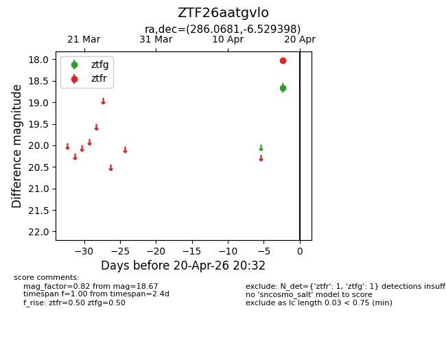
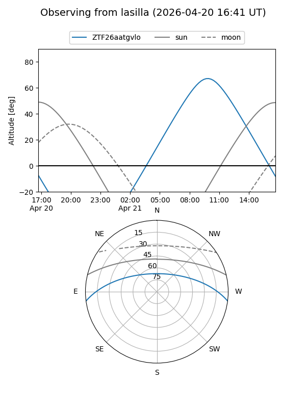
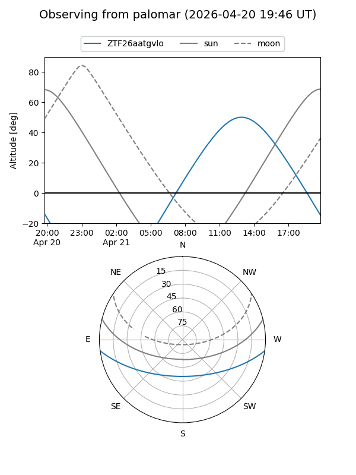

ZTF26aatgvlo
Target ZTF26aatgvlo at 2026-04-20 20:42
Aliases and brokers:
FINK: link
Lasair: link
ALeRCE: link
alt names
ZTF26aatgvlo (ztf,fink_ztf)
Coordinates:
equatorial (ra, dec) = 286.0681,-6.52940
equatorial (HMS+DMS) = 19:04:16.35,-06:31:45.83
galactic (l, b) = (28.5595,-5.81651)
Flags:
Photometry:
last ztfg=18.67, ztfr=18.02
1 ztfg, 1 ztfr detections
Lightcurve

Visibility


Additional plots